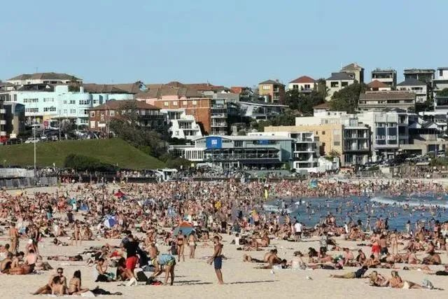

数说疫情0323：国内都市恢复脉搏，欧洲确诊直逼20万，美国失业率或超“大萧条”
原文链接 备份链接 国内多地周一重现早高峰。国际奥组委确认正式考虑延期举办东京奥运会。疫情令美国经济处在悬崖边缘。意大利对中国专家组的建议照单全收。 文 |《财经》数据研究员 徐进 图 |《财经》视觉中心 编辑 | 郝洲 一、国内多地 …

截至北京时间3月22日12时，除中国外，184个国家和地区累计确诊222707例新冠肺炎，“钻石公主”号邮轮712例。
当前，欧美疫情仍旧快速蔓延。其中，意大利病例突破5万例，总理孔特要求全国停止所有非必要的生产活动。美国、西班牙、德国、伊朗四国21日确诊数字突破2万例。
此外，新加坡宣布禁止所有外国人入境或过境。

意大利全国停止非必要生产活动
根据当地时间3月22日18时意大利卫生部公布的最近数据，意大利现有新冠病毒患者46638例，死亡5476例，治愈7024例，累计确诊感染新冠病毒总人数为59138例，较3月21日18时新增5560例，意大利新增死亡651例。
当地时间21日晚，意大利总理孔特通过社交媒体直播宣布，为了尽快遏制疫情蔓延，全国停止所有非必要的生产活动，在非必要情况下应实行远程办公。此外，他还强调超市仍将继续营业，民众不要排长队抢购食品。
孔特说，当前的疫情是意大利自二战后遇到的“最严峻的危机”。防控措施需要时间显现效果，意大利人要坚持住，不要失去对未来的希望，团结就可以战胜疫情。
意大利卫生专家表示，目前为止，意大利死亡病例平均年龄已从80.5岁降至80岁，确诊患者的平均年龄也降为了63岁。意大利新冠病毒应急委员会专员博雷利称，意大利的疫情峰值可能需要一周甚至更久才能到来。

据央视新闻，当地时间21日，意大利AC米兰足球俱乐部在官网发布公告称，球队技术总监保罗·马尔蒂尼于前一天接受新冠病毒核酸试剂检测的结果呈阳性。同时他的儿子，AC米兰队中场球员丹尼尔·马尔蒂尼也感染了新冠病毒。
公告称，马尔蒂尼和儿子目前身体状况良好，在知道自己和新冠肺炎确诊患者有密切接触之后，已在家隔离了两周时间。他们将继续隔离直至康复。
同一天，意甲尤文图斯俱乐部前锋迪巴拉在自己的社交媒体账号上公布了自己和女友感染新型冠状病毒的消息。他是继鲁加尼和马图伊迪之后，尤文第三名确诊感染的球员。
新加坡”封国”
央视新闻3月22日消息，新加坡跨部门工作小组负责人黄循财今天（22日）宣布，由于新冠肺炎确诊病例快速增长，其中绝大部分是输入病例。因此为了遏制疫情蔓延，从23日23时59分开始，禁止所有外国人入境或过境新加坡。此外，持有长期居留许可证件者中，只有从事医护、运输业的人士允许入境。
黄循财表示，新加坡马来西亚特别工作委员会已经达成一致，疫情期间持有工作准证的马来西亚人可以在住宿有保证的前提下返回新加坡继续工作。新加坡跨部门合作，协助企业解决住宿。新马之间货物运输不受限制。
澳大利亚“封国”
澳大利亚总理莫里森19日宣布，从当地时间20日晚21点起，对所有非澳大利亚公民和非永久居民执行旅行禁令。据路透社报道，20日当天，数千人依旧涌到邦迪海滩。

大量人群在海滩聚集的照片引发了澳联邦卫生部长格雷格·亨特的强烈不满。他表示，如此多人聚集在邦迪海滩是“令人无法接受的”。
当地时间21日下午，新南威尔士州警长大卫·埃利奥特宣布关闭邦迪海滩，因该沙滩人数已超过规定限制的户外聚集人数。此前，澳政府出台规定，禁止500人以上非必要性户外聚会。
外媒：东京奥运开始草拟多种推迟方案
北京时间3月22日，据路透社报道，两位知情人士透露，东京奥组委已经开始草拟今年夏季举办奥运会的可能替代方案。文章认为，这一举措与此前日本政府“不推迟奥运”形成鲜明对比。
据一位与东京奥组委关系密切的消息人士证实，东京奥组委内部确实正在讨论推迟的可能性，包括推迟一至两年。
一位参与草拟方案的官员表示，一些奥组委内部的工作人员希望东京奥运会能够推迟一个月或45天。当然，是否会推迟的最终决定必须由国际奥委会做出，但日本方面的立场也很重要。
在路透社看来，即便奥运会改期也面临着诸多的不确定性。这家英国通讯社认为，2021年夏季赛历拥挤，其中欧洲杯已经移到了2021年，同时还有日本福冈游泳世锦赛。到了2022年则更加拥挤，将有卡塔尔世界杯、杭州亚运会、北京冬奥会等。
近50国宣布进入紧急状态 其中部分国家称“战时状态”！
新冠肺炎疫情正在全球蔓延，截至北京时间3月22日中午12时许，据环球网统计发现，不到3天时间内，全球又有多国宣布进入紧急状态。截至目前，全球至少已有48个国家宣布进入紧急状态。
已宣布进入紧急状态的国家包括：格鲁吉亚、多米尼加、葡萄牙、澳大利亚、萨尔瓦多、洪都拉斯、卢森堡、津巴布韦、哥伦比亚、约旦、纳米比亚、斯威士兰、苏丹、亚美尼亚、厄瓜多尔、芬兰、法国、摩尔多瓦、瑞士、哥斯达黎加、波黑、奥地利、塞浦路斯、黎巴嫩、塞尔维亚、南非、秘鲁、哈萨克斯坦、罗马尼亚、利比亚、西班牙、保加利亚、爱沙尼亚、波兰、巴拿马、美国、委内瑞拉、斯洛伐克、拉脱维亚、阿根廷、捷克、匈牙利、菲律宾、巴勒斯坦、危地马拉、韩国、立陶宛、意大利。
其中，法国、韩国分别为“战时状态”、“战争状态”，葡萄牙历史上首次进入全国紧急状态。
其他国家疫情最新消息
西班牙或将国家紧急状态延长15天
据西班牙卫生部22日公布的数据，西班牙较前日新增新冠肺炎确诊病例3646例，累计确诊病例达28572例，其中1720人死亡，2575人治愈出院。据当地媒体报道，西班牙政府22日表示，为了遏制疫情，决定将该国原定15天的国家紧急状态延长15天，该决定需议会进一步批准生效。
21日晚，根据西班牙媒体消息，皇马前主席洛伦索·桑斯因患新冠肺炎去世，享年76岁。
美国新增6670例新冠肺炎，确诊人数突破3万
据美国约翰·霍普金斯大学发布的新冠肺炎数据实时统计系统显示，截至美国东部时间3月22日下午6点，美国共报告新冠肺炎确诊病例32717例，死亡409，治愈178例。22日不到18小时时间里，美国新增确诊6670例。目前，美国确诊病例数位居全球第三，仅次于中国和意大利。
纽约州的确诊病例数占全美总数近一半，22日达到了15777例，一日内新增3463例。其中纽约市就占到了9654例，新增1539例。其他确诊病例上千的州包括华盛顿州1996例，新泽西州1914例，加利福尼亚州1701例，伊利诺伊州1049例，密歇根州1035例。
法国新增1559例新冠肺炎，累计确诊升至16018例
法国卫生总署署长热罗姆·萨洛蒙在22日的新闻发布会上通报说，截至当日法国累计确诊新冠肺炎病例16018例，较昨日新增1559例。其中新增死亡112例，累计死亡674例，住院7240例，重症1746例。
伊朗新增1028例新冠肺炎 累计升至21638例
伊朗卫生部3月22日宣布，过去24小时，伊朗新增新冠肺炎确诊病例1028例，新增死亡129例。目前该国累计确诊21638例，其中1685人死亡，7913人治愈。
接触医生检测呈阳性 默克尔居家隔离
据央视新闻，德国内阁计划将于3月23日启动一项金额达1500亿欧元的补充预算，用于满足下周末启动的针对疫情的快速援助计划，德国在各地已经部署了大约220名联邦技术救援署工作人员。德国联邦食品及农业部部长尤利亚·戈洛克内尔指出德国有充足的食品供应，呼吁消费者不要抢购。
22日，德国联邦政府发表声明，在获悉与自己接触的医生新冠肺炎病毒检测呈阳性后，德国总理默克尔已居家隔离。
据悉，默克尔在本周日宣布新的疫情管控措施后不久被告知这一消息，该医生周五曾给默克尔注射肺炎链球菌疫苗。联邦政府发言人塞伯特称，默克尔将在未来几天接受“常规检查”，并暂时居家工作。
综合人民日报、央视新闻、中国新闻网、环球网


推荐阅读

点击大图 |写入教案的“强奸女儿案”平反启示录

点击大图 |这次美国股灾堪比1929年还是2008年？

原文链接 备份链接 国内多地周一重现早高峰。国际奥组委确认正式考虑延期举办东京奥运会。疫情令美国经济处在悬崖边缘。意大利对中国专家组的建议照单全收。 文 |《财经》数据研究员 徐进 图 |《财经》视觉中心 编辑 | 郝洲 一、国内多地 …
原文链接 备份链接 从股市的表现来看，市场更倾向于认同用短期的不便和经济痛苦来换取对病毒的控制 文 |《财经》特派记者 金焱 发自华盛顿 编辑 | 苏琦 新冠肺炎疫情持续肆虐，美国和欧洲为应对疫情影响经济，纷纷出台各种刺激救助政策，试图 …
原文链接 备份链接 根据当地时间3月8日18时意大利卫生部公布的最新数据，意大利现有新冠病毒患者6387例，死亡366例，治愈622例，累计确诊感染新冠病毒总人数为7375例，较3月7日18时新增1492例，新增133例死亡病例。 据外 …
原文链接 备份链接 文 |《财经》特派记者 金焱 发自华盛顿 编辑 | 苏琦 2020年3月6日，我打算给自己放一天的假。 算起来自从武汉疫情暴发，我在1月21采写了第一篇文章《美确诊首例新型病毒病例，或成全球性公共卫生危机事件信号》 …
原文链接 备份链接 据世卫组织新冠肺炎情况报告，截至欧洲中部时间7日10时(北京时间7日17时)，中国境外新冠肺炎确诊病例数达到21110例，死亡413例。其中，从3月7日零时至8日零时，意大利新冠肺炎确诊病例新增1332例，累计确诊病例 …